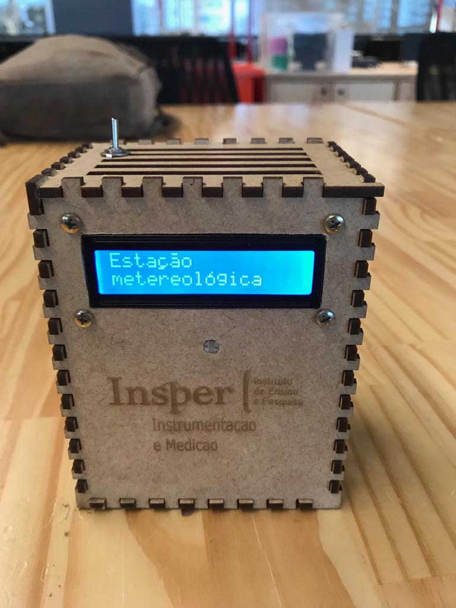

2019
Construção de uma estação meteorológica empregando sensores diversos. Os materiais necessários foram madeira tipo MDF, uma placa PCB, um Arduino Uno, um sensor de luminosidade LDR, um sensor de umidade DHT22, um sensor de temperatura LM35, um sensor de pressão BMP180 e um display de cristal líquido
colegas 1, 2 e 3
Projeto final de Instrumentação e Medição
Uma estação meteorológica que exibia dados de umidade, pressão, luminosidade, altitude e temperatura com suas respectivas incertezas